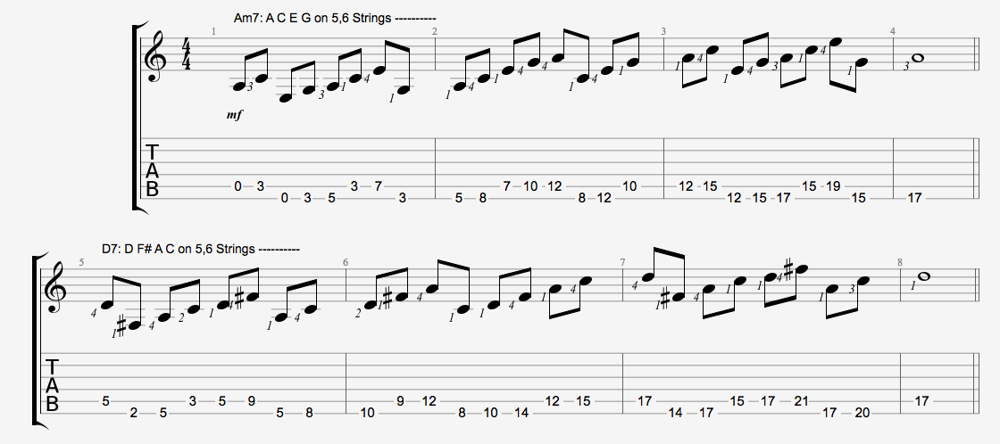

吉他琶音練習 - 以 G 大調 251 為例
延續 上一篇 的筆記，這篇用和弦進行 251 繼續討論琶音 (Arpeggios) 練習的方法。
首先 G 大調的 251 和弦進行是：
Am7 - D7 - Gmaj7
這篇筆記會專注在這三個和弦的琶音思考與練習。
基本概念
這三個和弦個別的琶音練習都可以參考上一篇的筆記，但是套用調性以及順階和弦時，要了解其基本關係，包含和弦本身的組成音、音程、屬性，在調性裡的級數、功能等資訊。
| 和弦名稱 (Chord Name) | 組成音 (Notation) | 和弦音程 (Interval) | 和弦屬性 (Chord Type) | 調性級數 (Level of G Major) | 中心調 (Degree of Key Center) |
|---|---|---|---|---|---|
| Am7 | A C E G | P1 m3 P5 m7 | minor 7th | ii | 2 4 6 1 |
| D7 | D F# A C | P1 M3 P5 m7 | Dominant 7 | V | 5 7 2 4 |
| Gmaj7 | G B D F# | P1 M3 P5 M7 | Major 7th | I | 1 3 5 7 |
練習的基本精神一樣，先練習密集聲位琶音，走八度音以內的排列組合，然後再走遠距聲位琶音，也就是跨越八度音的組合。
思考一：和弦的本質
- 組成音：知道和弦組成音，不用刻意記誦，重點在於理解與思考
- 練習過程中，同時思考，組成音之間可以有哪一些音，例如完全五度下一個可以是大六度，那音名是？大三度前一個大二度音名是？
- 從不同的級數出發，例如 Am7 從根音出發：A C E G，從三度音出發：C E G A，從五度音出發：E G A C … 等
- 練習小和弦同時，可以走小音階，大和弦可以走大音階。然後反覆思考上一點。
- 音程：聽音和音之間的相對距離感，這是非常重要的音感訓練，也是在『相對、絕對音感』探討的重要概念
- 練習目的：理解音和音之間的距離，例如看到 A E 、D A、G D 就知道是完全五度 (P5) 的關係，可以搭配五度圈理解。不用刻意去背，理解後，看久了自然會記住。熟悉幾個和弦後，其他和弦的理解與記憶就會更快。
- 練習音程時，同樣的要試看看密集聲位與遠距聲位的感覺。同樣的 D C 密集聲位和遠距聲位聽起來感覺是有差異的。
- 注意屬七和弦的三全音 (Triton)，聽起來感覺如何？
- 和弦屬性：
- 和弦屬性會影響使用方法，特別是三度音、七度音的變化，會決定和弦的用法，進而影響延伸和弦、和弦代理等變化。和弦屬性的思路與學習，參考『和弦學習地圖』與『和弦基礎』做延伸。
- 思考大和弦、小和弦在不同調性的功能，本文用 G 大調的 251，Am7 是 G 大調的二級，但是也思考在其他調性裡的角色，思考時，可以參考順階和弦表。請不要用背的，而是要思考與理解，然後找歌曲應用他。
思考二：在調性裡的角色、功能
- 思考大範圍的概念，也就是調性級數關係。這些和弦放在調性裡，分別是的屬性是什麼？他們有啥功能？
- 和聲代換：可以用哪一些代換方法，基本的是 TSD 代換，會有不同的練習組合跑出來。
- 轉調：本文以 G Major 為例，實際練習的操作，可以轉換其它調性，但是建議要先掌握住一個調性，熟悉之後，再換其他調性。至少熟悉 G 和 G 大調 (E 和 A 小調)。
思考三：在和弦和調性遊走
- 熟悉思考一、二之後，再回到思考一討論的，不過可以加入其他元素：延伸音、調式音階
- 彈奏的角度在調性、和弦音 (Chord Tone) 遊走
- 思考三是比較進階的，在還不熟悉調式、和弦概念、音程、各種轉調等，可以先忽略不看。
概念摘要
上述的思考，跟樂器還沒有直接關係，可以在手上沒有樂器的時候練習。
思考的練習有幾個要注意的地方：
- 由簡入繁：不用一下子想要記憶太多，腦袋會爆炸。
- 不要急著要練習轉調，先熟悉一個調先。
避免資訊爆炸，腦袋過載，凡是由簡入繁，慢慢延伸。
吉他的練習
與上一篇的筆記概念類似，不過要練過上一篇的東西，再來練習本文內容。
練習的重點一樣是在於『用腦袋驅動手指頭』，著重 彈什麼，而不是怎麼彈。只要不知道正在彈啥音，請停下來，把速度放慢，聽節拍器，聽每一個音符。
同樣的，下述的練習，左手都需要一定程度的擴張，如果沒有練習類似的東西，請不要隨意嘗試，避免手指受傷。
練習原則與概念
先修以及注意事項，和 上一篇 一樣。。。寫玩了 XD
基本練習：Arpeggios on 2 Strings
同樣的是在兩根弦上練習，下圖是 Am7、D7 在五、六弦上的練習。這次我把六線譜顯示出來了，不過練習過程中，還是要思考音符為主。用 腦袋驅動手指頭，用音符表現音樂。

上述例子，是在五、六弦，從根音出發，同樣的概念，其他任意兩根弦的組合，或者從不同級數出發，也都是要練習的。所有的思考都是橫向的、音樂性的，完全打破過去指板圖像學習的概念，也就是『吉他和弦聲位』提到的第二種思路。
任意兩根弦的練習，如果這兩弦不是相鄰的，而是跨越的，那麼這個和弦彈出來就會有 Drop Voicing 的感覺。
串接和弦
在五、六弦串接這三個和弦，變化很多，下圖是最簡單的例子：

同樣的，熟練後，可以換不同兩根弦練習，隨意組合。當然兩根熟練了，三根、四根，全部。。。過了這關，基本上對於指板應該已經有完全不同的認識了，指頭上的功夫也進入全新的境界了。
串接其他元素
可以練到前述兩者，基本上已經有很多東西可以玩，接下會發現一片新的天地可以玩：
- 加入吉他的手法與技巧：吉他手最擅長的指板思考，混合五個把位的音階，大和弦放大音階，小和弦放小音階。不知道放啥，就彈五聲音階。
- 放入調式音階
- 加入技巧：Sweep、Tapping、垂勾顫。。。基本功練過的，都拿進來玩
- 發現其他可能的和弦按法，基本功提過一個和弦至少要會五種按法，經過這個練習，配合簡化和弦的概念，按法可以多出很多種。
- 找 Lick 練習，放入曾經彈過的句子
- 熟悉 251 之後，當然也可以套用其他常見的和弦進行，像是卡農進行。。。。
彈歌、寫歌
練習一堆東西，最終目的是拿來應用的，最直接的就是找歌曲練習，應用 251 的歌曲很多，再拿出來複習，你會有不一樣的體悟。以下列幾首 251 的流行歌曲：
- Santana：Europa
- 黃品源：你怎麼捨得我難過
- Gary Moore：Still got the blues
- Bertie Higgins：Casablanca
- 張宇：給你們
Realbook 就不列了，基本上是多到爆炸。。。
251 的歌曲，會有種故事從一半開始的感覺。這樣的曲子，我聽到不用透過吉他，就可以聽出和弦進行了。用你自己的形容詞去感受『和弦進行』，音感是這樣累積訓練出來的。
結論
這兩篇 Arpeggios 的練習都盡量不用六線譜介紹，主要是因為要練習思考音樂本質。吉他手很容易落入技術的思維，然後即使彈了很多東西，但是依舊不知所云的狀況。這種現象就像學語言一樣，背誦很多單字，記憶很多文法，也看了很多文章，但是還是無法活用他。而透過練習琶音的過程，讓大家回歸音樂本質的問題。
同樣的如 前一篇 所提及，不見得透過五線譜就真的變成很會作曲或者彈歌，而是透過這樣的方法讓學習者（我自己）有重新思考本質的機會。透過這樣的思考練習，舊的資訊、訊息，有機會重新昇華成新的知識，然後回去再練習曾經彈奏的曲子，則有不同的體悟。
很多教學都用六弦譜直接彈奏，帶來的是快速方便的學習途徑，但是相對的卻少了思考的機會。很多仿間的教學，都很會強調『速成』，而我一直相信物理的『能量不滅定律』，知識也是一種能量，囫圇的學習，只是讓一堆能量堆積在體內。人的體能、智商在短時間之內終究是有限制的，無法一下子吃下太多知識。但是透過持續性的練習，就會有無窮的可能。
網路上著名的勵志文：每天進步 1%，一年進步 37 倍。文章的重點不是 37 倍，而是 持續的學習 、漸進的 刻意練習，才是捷徑。
延伸閱讀
站內資料
- 吉他琶音 (Arpeggios) 的練習 - 以 Gmaj7 為例
- 彈什麼和怎麼彈
- 相對、絕對音感
- 三全音 (Triton)
- 吉他基本功
- 吉他和弦聲位基本概念
- 吉他音階學習引導
- 順階和弦表
- 吉他手怎麼練習音感
- 卡農進行
參考資料
更新紀錄
- 原文位址： https://rickmidi.blogspot.com/2015/04/arpeggios-251-of-g-major.html
- 2015/04/15: 初版